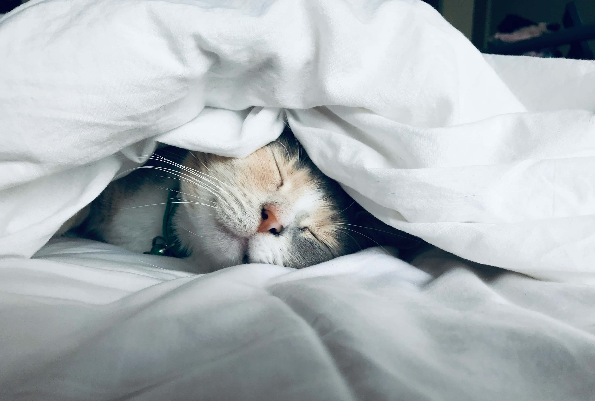

Dormir mejor con 50+: cómo estoy arreglando mi sueño para tener más energía

Si te soy sincero, al sueño llegué tarde. Antes de cuidarlo empecé por la comida, el movimiento diario y la fuerza sencilla: todo ese cambio físico con 50+ del que hablo en más detalle en Cambio físico a los 50+: mi transformación real y en cómo pasé del sofá a sumar kilómetros en Movimiento diario: del sofá a sumar kilómetros sin épica. Mientras tanto, dormía regular tirando a mal: noches de insomnio, de darle vueltas a todo en la cama y de tirar de pastillas para “apagar” el cerebro después de días en los que ya venía pasado de vueltas. Si has vivido rachas de estrés fuerte o sustos de salud, sabes de qué hablo.
Ahora, con 50+ (y esto vale igual si tienes 40, 60 o 70), me he dado cuenta de algo muy simple: si quiero mantener mi cambio físico, mi salud mental y una manera de vivir que tenga sentido, tengo que tomarme en serio mis noches.
En este artículo te cuento cómo estoy mejorando mi sueño y mi descanso, qué cosas me estaban reventando las noches y qué estoy probando ahora, aplicando el Método UVE también al sueño.
Por qué también estoy cuidando mis noches con 50+
Durante años, mi idea de “cuidarme” era bastante simple: comer un poco mejor, moverme más y ya está. El sueño era ese trozo del día que simplemente pasa: te acuestas, te despiertas y a otra cosa. Si dormía mal, lo arreglaba con café por la mañana y listo.
El problema es que a partir de los 40–50 todo pesa más: más estrés acumulado, más responsabilidades, más historia detrás que se queda rondando en la cabeza. Y aparece un patrón muy típico: te acuestas tarde, miras el móvil hasta quedarte medio sopa, duermes a trompicones y te despiertas hinchado, sin energía, tirando de café y azúcar para sobrevivir al día.
Además, no es solo una sensación. La Fundación Española del Corazón recuerda que dormir pocas horas y con mala calidad se asocia a más tensión arterial, más riesgo de sobrepeso y más problemas cardiovasculares [1]. Y la Sociedad Española de Neurología estima que cerca de la mitad de la población adulta en España no tiene un sueño de calidad y que muchas personas se despiertan con la sensación de no haber descansado [2].
Traducido a lenguaje ViveConUve: mi cambio físico y mental cojea si mis noches siguen siendo un caos.
Cómo dormía realmente antes de pararme a mirarlo (Ubica)
En el Método UVE, lo primero es Ubicar: mirar dónde estás sin autoengaños.
Cuando me puse serio con el sueño, tuve que admitir algunas cosas claras:
- Decía “duermo 7 u 8 horas”, pero entre que me acostaba, me dormía, los despertares y el scroll nocturno, muchas veces no llegaba ni a 6 horas útiles.
- Mis horarios eran poco estables: días de acostarme a las 00:30, otros a las 2:00 si había ensayo, bolo o simplemente me liaba con pantallas.
- Móvil en la cama, cenas tardías en la época en la que no cuidaba el horario, y la cabeza en modo centrifugadora repasando problemas y cosas pendientes.
Si quieres hacer tu “foto del sueño”, puedes empezar con tres preguntas sencillas:
- ¿A qué hora me acuesto de verdad la mayoría de los días?
- ¿Cuántas horas seguidas duermo sin despertarme?
- ¿Con qué sensación real me levanto entre semana, del 1 al 10?
Solo con eso ya tienes una Ubicación mucho más honesta.
Lo que más me estaba destrozando el descanso (Verifica)
La segunda parte del Método UVE es Verificar: observar qué cosas empeoran (o mejoran) lo que quieres cambiar.
En mi caso, los grandes sospechosos fueron:
- Pantallas tarde: cuando me llevo el móvil a la cama, casi siempre duermo peor.
- Comer tarde o pesado: en la época en la que cenaba tarde y fuerte, las digestiones se notaban a las 3 de la mañana.
- Café y estimulantes a última hora.
- Días sin apenas movimiento.
- Rumiación mental: irme a la cama con la cabeza llena de cosas sin ordenar.
Verificar fue eso: mirar una semana de mis días y mis noches y ver patrones claros sin excusas.
Lo que estoy probando para dormir mejor con 50+ (Experimenta)
La tercera parte del Método UVE es Experimentar: probar cambios pequeños y sostenibles, sin convertir tu vida en un cuartel. Te resumo lo que más me está ayudando.
Rutina mínima de cierre del día
Nada raro:
- Un rato antes de acostarme, bajo luces y ruido en casa.
- Evito pantallas en la cama. Si puedo, el móvil se queda fuera del dormitorio.
- Dejo una libreta a mano para soltar “cosas pendientes” y que no se queden dando vueltas en la cabeza.
Cenas (o no cenas) más conscientes
Cuando hago ayuno intermitente, la opción que mejor me funciona es no cenar y dejar que el tramo fuerte del ayuno sea la noche.
Los días que no estoy con ayuno intermitente, sí ceno, pero lo hago muy temprano y ligero:
- Ceno pronto, dejando al menos un par de horas antes de irme a la cama.
- Elijo cenas sencillas (verdura, proteína fácil de digerir y algo de carbohidrato), en lugar de platos muy pesados.
La idea no es hacer la cena perfecta, sino evitar llegar a la cama con el estómago en plena batalla. Y encaja con todo lo que ya cuento sobre cómo como ahora con 50+ y mi experiencia con el ayuno intermitente.
Movimiento diario como aliado del sueño
Lo que empecé por salud física se ha convertido también en ayuda directa para el descanso:
- Paseos diarios, a mi ritmo.
- Tres sesiones semanales de fuerza sencilla.
No busco marcas. Busco llegar a la noche con el cuerpo pidiendo descanso de forma natural.
Respiración y presencia básica
Después de algunos sustos de salud y momentos de ruido mental alto, probé cosas muy sencillas:
- Respiraciones lentas, contando inhalaciones y exhalaciones.
- Poner atención en las sensaciones del cuerpo cuando ya estoy en la cama.
- Alguna meditación guiada básica para soltar tensión del día.
No las uso como receta mágica, sino como herramientas para bajar una marcha cuando llego demasiado acelerado.
Qué he notado al mejorar el descanso
No he convertido mis noches en un spa perfecto. Sigo teniendo días malos. Pero con estos cambios y el Método UVE aplicado al sueño estoy notando cosas muy concretas:
- Más energía por la mañana y menos necesidad de café para arrancar.
- Menos sensación de hinchazón y más facilidad para mantener el peso a raya.
- Mejor humor y más paciencia con la gente que quiero.
- Cabeza algo más clara y menos ruido mental.
No son milagros. Son pequeñas decisiones encadenadas que hacen que el día siguiente sea más llevadero.
Mini plan UVE para que empieces tú
Si quieres hacer algo muy concreto con tu sueño esta semana, te propongo este mini plan:
- Durante tres noches, anota a qué hora te acuestas, cuánto tardas en dormirte, cuántas veces te despiertas y con qué sensación te levantas.
- Detecta dos cosas que veas claras que empeoran tus noches (por ejemplo, móvil en la cama y comidas muy tardías o pesadas).
- Elige uno o dos cambios pequeños para los próximos siete días: dejar el móvil fuera del dormitorio, adelantar un poco la cena, bajar luces antes de dormir o dar un paseo suave después de cenar.
No es un examen. Es un experimento. Si notas que descansas un poco mejor, ya tienes una prueba de que cuidar tus noches merece la pena.
Notas y lecturas recomendadas
- Fundación Española del Corazón. «Cómo influye el sueño en tu salud cardiovascular». Blog Impulso Vital, 2019. fundaciondelcorazon.com .
- Médicos y Pacientes (Consejo General de Colegios Oficiales de Médicos). «El 48 por ciento de los adultos y el 25 por ciento de los niños no tiene un sueño de calidad en España, según la SEN». 2024. medicosypacientes.com .